Программа для просмотра логов LogsBrowser
Инcтрукция по использованию
Запуск программы
Для запуска программы необходимо распаковать архив с программой и запустить файл logsbrowser.exe - появится главное окно программы:
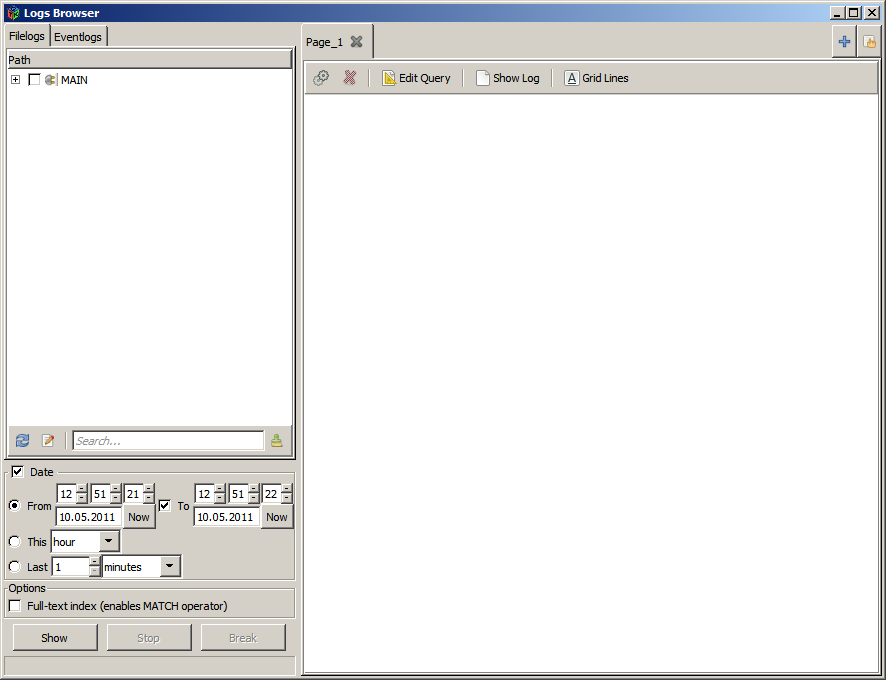
Основное окно программы разбито на 3 блока:
- Слева вверху - дерево выбора источников логов
- Слева внизу - блок управления выгрузкой логов: указание временного интервала, и кнопки управления процессом выгрузки логов.
- Справа - область отображения выгруженных логов
Источники логов
Программа ищет логи в источниках, предварительно выбранных в дереве источников логов.
Процесс указаниия источников для файловых и евент-логов отличаются:
- источники евент-логов указываются в файле evlogs.cfg (по-умолчанию), при запуске программы дерево на вкладке Evenlogs заполняется непосредственно из файла
- в файле logs.cfg (по-умолчанию), указываются пути (папки), просматривая которые, программа будет заполнять дерево источников на вкладке Filelogs
Загрузка списка источников файловых логов
Источник файловых логов - один или несколько файлов логов, сгруппированных по подсистеме, для которой ведется лог, например, на сервере есть несколько файлов логов: OrderCatalogue.BL.log.12, OrderCatalogue.BL.log.13, OrderCatalogue.BL.log.14 и т.д. - все они будут сгруппированы под общим именем OrderCatalogue.BL. Подробнее
По умолчанию программа при запуске не загружает источники файловых логов (настраивается опцией fill_at_start секции tree в конфигурационном файле) - в дереве обозначены лишь пути указанные в конфигурационном файле. Для заполнения дерева конкретными источниками логов необходимо нажать кнопку Обновить под деревом логов:
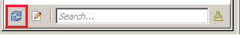
После нажатия кнопки Обновить программа будет просматривать пути из конфигурационного файла и заполнять дерево источников файловых логов названиями подсистем.
Управление деревом источников логов
Из интерфейса программы можно делать следующие действия:
- Редактировать конфигурационные файлы, в которых указываются источники логов
- Осуществлять поиск и фильтрацию в дереве логов
Подробнее
Блок управления выгрузкой логов
В блоке управления выгрузкой логов можно:
- выбрать временной интервал - будут выгружены логи, дата/время которых входит в указанный интервал
- запустить/остановить процесс выгрузки логов
Выбор временного интервала
В блоке выбора временного интервалa
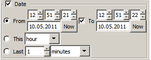
время можно выбрать 3-мя способами:
- указать точный интервал времени, заполнив поля From (начальный момент времени) и To (коненчный момент времени). Кнопки Now устанавливает в соответсвующих полях текущее время. Так же выставить интервал можно автоматически.
- указать текущий период времени This - текущий час, день или месяц - при выгрузке логов будут выгружены логи от начала текущего периода (начало часа, дня месяцы) до момента запуска процесса выгрузки логов.
- указать интервал "последние..." - Last - при выгрузке логов будут выгружены логи от текущего момента минус указанное число указанных периодов до текущего момента.
Автоматическое выставление точного интервала времени
При запуске программы в трее появляется значок (зеленый кружок):
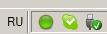
при нажатии на него значок становится красным и включается "режим слежения за мышью":
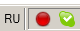
- при первом щелчке мышью время From в блоке выбора временного интервала устанавливается на момент щелчка (округление до секунд вниз);
- при повторном нажатии на значок в трее он опять становится зеленым и время To устанавливается на момент нажатия на красный значок в трее (округление до секунд вверх)
Запуск/остановка выгрузки логов
Для запуска выгрузки логов необходимо после выбора в дереве нужных источников (галочками) нажать кнопку Show.
Кнопкой Stop останавливается процесс выгрузки логов и в таблице выгруженных логов отображаются выгруженные к моменту остановки логи.
Кнопка Break останавливает выгрузку логов с потерей уже выгруженных - в таблице выгруженных логов ничего не отображается.
Выгрузка логов
После выбора источников в дереве источников логов (файловых и/или евент) и нажатия кнопки Show запускается процесс выгрузки логов.
Из файлов логов на серверах выгружаются отдельные сообщения, удовлетворяющие критериям:
- файл принадлежит какой-то из подсистем-источников выбранных в дереве источников логов
- время сообщения находится в выбранном в блоке выбора временного интервала промежутке
Область отображения выгруженных логов
Область отображения выгруженных логов представляет собой многовкладочный графический элемент, на каждой вкладке которого находятся:
- панель управления
- таблица логов
Добавить вкладку можно нажав кнопку 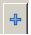 в области расположения вкладок.
Поменять имя вкладки можно, сделав двойной щелчок мышью на имени вкладки.
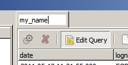
Выгруженные логи отображаются в области отображения выгруженных логов (справа) в таблице.
Панель управления
Панель управления состоит из кнопок:
- выполнить запрос 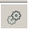
- остановить выполнение запроса 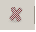
- редактировать запрос - Edit Query
- показать лог - Show Log
- показать/скрыть сетку в таблице - Grid Lines
Редактирование запроса
При нажатии на кнопку Edit Query области отображения логов отображается блок редактирования запроса.
Блок редактирования запроса сотсоит из:
- Поле выбора Load Query - позволяет отобразить в области редактирования запроса сохраненного в конфигурационном файле queries.xml (по-умолчанию)
- Опция auto_lid - см. страницу с подробностями
- Область редактирования запроса
Язык запросов используемый в программе представляет собой стандартный SQL, расширенный возможностями автоматического накопления идентификаторов сообщений в логах (для окна просмотра лога) и подсветки строк.
Каждая вкладка в области отображения выгруженных логов ассоциирована с таблицей в базе данных. Для использования имени таблицы, ассоциированной с текущей активной вкладкой, в запросах необходимо использовать ключевое слово $this; например, при выполнении на активной вкладке запроса select * from $this в графическом элементе - таблице логов этой вкладки отобразятся данные из таблицы БД, ассоциированной с этой вкладкой. Для обращения к данным из другой вкладки, в запросах надо использовать $имя_вкладки
Подробнее
Выполнение запроса
Запрос из области редактирования запросов выполняется:
- автоматически при выгрузке логов - запрос выполняется на вкладке, которая была активна в момент нажатия кнопки Show в блоке управления
- при нажатии на кнопку "Выполнить запрос"
Выполнение запроса можно остановить нажав кнопку "Остановить выполнение запроса".
После выполнения запроса, его результат отображается в таблице в области отображения логов.
Просмотр сообщений
При двойном щелчке на строке в таблице в области отображения выгруженных логов или при нажатии на кнопку Show Log - в окне просмотра лога отображается текст из сообщений, соответствующих строке в таблице.
Подробнее
Окно просмотра лога
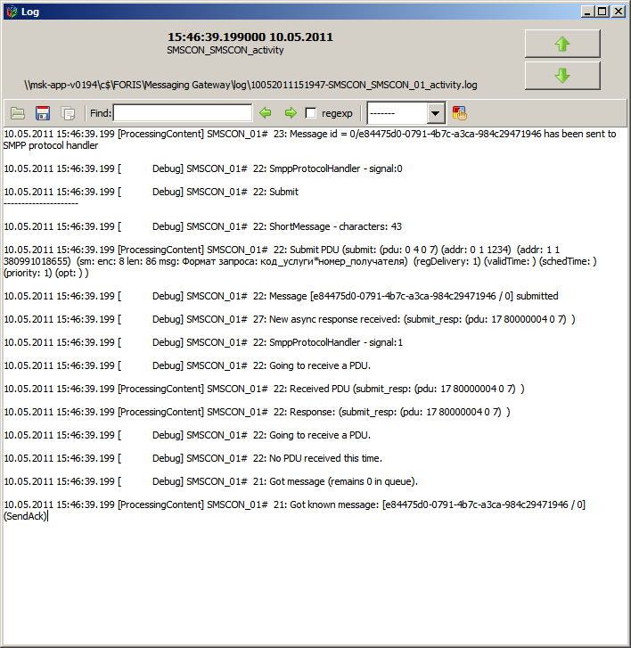
Окно просмотра лога состоит из:
- области со служебной информацией о логах
- области с кнопками перехода к тексту логов, соответствующих следующей/предыдущей строке в таблице
- панели управления
- текста лога
Панель управления окна просмотра лога
На панели управления окна просмотра лога находятся следующие графические элементы:
- кнопка открыть файл(ы) , из которых взят текст лога в текущем окне
- кнопка сохранить текст лога в файл 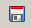 - открывается диалог выбора файла для сохранения
- кнопка копировать текст лога в буффер обмена 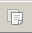
- поле ввода Find 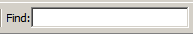 - поиск введенного текста в тексте лога
- кнопки следующий и предыдущий - переход к следующему/предыдущему совпадению строки поиска в тексте лога
- кнопка переключения regexp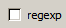 - при активном состоянии поиск в тексте лога ведется, используя регулярные выражения
- поле выбора подсветки синтаксиса 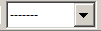- варианты подсветок настраиваются в конфигурационном файле syntax_hl (по-умолчанию)
- кнопка редактирования подсветки 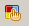- открывает область редактирования подсветки в нижней части окна просмотра лога. Подробнее о подсветке
Настройки программы
Все настройки хранятся в файле config/logsbrowser.cfg. Описание файла настроек.